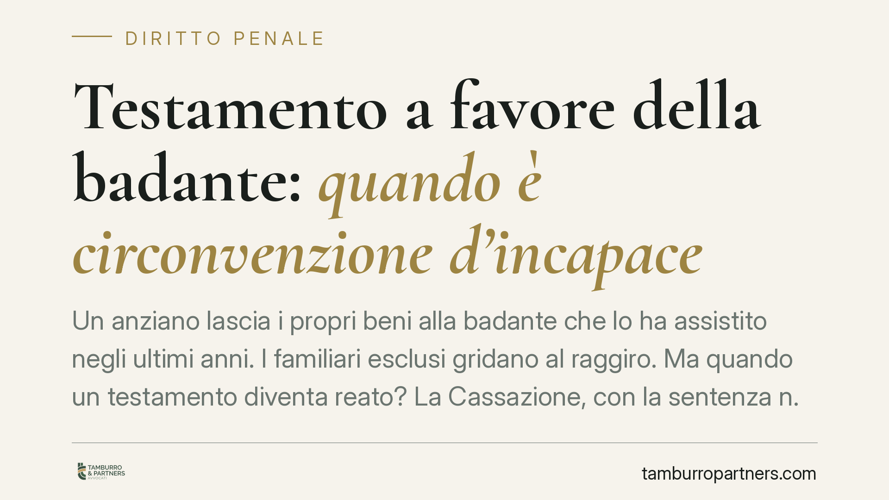

Testamento a favore della badante: quando è circonvenzione d'incapace
Un anziano lascia i propri beni alla badante che lo ha assistito negli ultimi anni. I familiari esclusi gridano al raggiro. Ma quando un testamento diventa reato? La Cassazione, con la sentenza n. 28907/2014, precisa i confini della circonvenzione d'incapace e il ruolo della prova indiziaria. Un tema delicato, al confine tra diritto penale e successioni.

Il caso e perché conta
La vicenda è frequente: una persona anziana, spesso sola, viene assistita per anni da una badante. Alla morte emerge un testamento che la designa erede o legataria, escludendo in tutto o in parte i parenti più stretti. Questi ultimi, sorpresi, sospettano un approfittamento della fragilità del congiunto.
La domanda giuridica è una sola: quel lascito è frutto di una libera scelta o di un raggiro penalmente rilevante? La Corte di Cassazione, con la sentenza n. 28907 del 2014, ha fissato alcuni punti fermi che vale la pena conoscere, sia per chi teme di aver subìto un abuso sia per chi ha ricevuto un'eredità in buona fede.
Inquadramento normativo
Il riferimento è l'art. 643 del codice penale, che punisce la circonvenzione di persone incapaci. La norma colpisce chi, per procurare a sé o ad altri un profitto, abusando dello stato di infermità o deficienza psichica di una persona, la induce a compiere un atto che produce effetti giuridici dannosi per lei o per altri.
Servono quindi tre elementi:
- uno stato di infermità o deficienza psichica della vittima (non necessariamente una malattia conclamata, ma una condizione che ne riduce la capacità di autodeterminarsi);
- un abuso di tale condizione da parte dell'agente;
- l'induzione a compiere un atto dannoso, come appunto un testamento.
La Cassazione ribadisce un principio essenziale: la sola vecchiaia non basta. L'età avanzata, da sola, non equivale a incapacità. Occorre dimostrare una concreta menomazione della sfera volitiva o intellettiva che abbia reso la persona vulnerabile alla suggestione altrui.
La prova indiziaria
Il passaggio più rilevante della sentenza riguarda il *come* si prova il reato. La Corte afferma che la circonvenzione può essere accertata anche in via presuntiva, cioè attraverso una pluralità di indizi gravi, precisi e concordanti.
È raro, infatti, disporre di una prova diretta del raggiro. Il giudice può allora valorizzare elementi convergenti: il progressivo isolamento dell'anziano dai familiari, l'improvviso mutamento delle disposizioni testamentarie a favore di chi non aveva legami affettivi stabili, la condizione di salute documentata, il controllo esercitato dalla badante sulla vita quotidiana e sulle relazioni dell'assistito.
Nessun indizio, isolatamente, è decisivo. È la loro convergenza a poter fondare la responsabilità penale.
Implicazioni pratiche
Per i familiari che si ritengono danneggiati, la sentenza apre una strada: non è necessaria la prova "schiacciante" del raggiro, ma occorre costruire un quadro indiziario solido e documentato. Attenzione però: il sospetto non basta, e il rancore verso chi ha assistito il parente non è un argomento giuridico.
Per la badante o per chiunque riceva un lascito da persona anziana e fragile, la pronuncia è un monito alla trasparenza. Un'assistenza genuina e un affetto reale non sono reato, ma chi vive a stretto contatto con il testatore deve essere consapevole che la sua posizione sarà esaminata con particolare rigore.
Sul piano civilistico, inoltre, il testamento può essere impugnato per incapacità naturale del testatore (art. 591 c.c.) anche indipendentemente dall'esito penale. I due piani, penale e successorio, procedono con regole e tempi distinti.
Cosa fare in concreto
- Raccogliete la documentazione sanitaria del testatore relativa al periodo di redazione dell'atto: cartelle cliniche, diagnosi, terapie incidono sulla valutazione della capacità.
- Ricostruite la cronologia dei rapporti familiari e dell'assistenza: quando è cambiato il quadro affettivo e quando è stato redatto il testamento.
- Non agite d'impulso: una denuncia infondata espone a conseguenze. Valutate prima la solidità degli indizi.
- Distinguete i due rimedi: l'azione penale per circonvenzione e l'impugnazione civile del testamento rispondono a presupposti diversi e possono coesistere.
- Consigliamo di rivolgervi a un legale per un'analisi preliminare prima di intraprendere qualsiasi iniziativa.
Disclaimer
Contributo informativo a cura di Tamburro & Partners - Avv. Giuseppe Tamburro. Non costituisce parere legale.
Ogni condominio ha una storia a sé.
Se gestisci un'amministrazione e vuoi un confronto su una specifica questione condominiale, scrivi allo studio. Ti rispondiamo entro un giorno lavorativo.